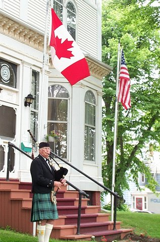
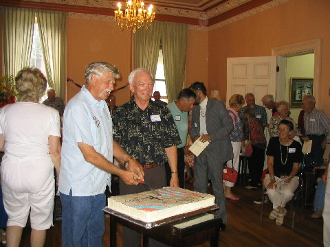
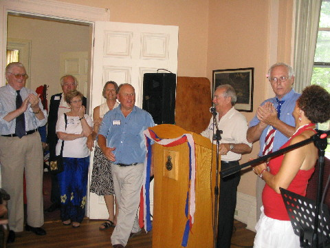

No. 48 July 8, 2006



US Citizens’ Day Reception Held
A capacity crowd of US citizens was in attendance at Haviland Club to launch the first US Citizens Day reception sponsored by the Community Foundation of Prince Edward Island on July 4. Those in attendance hailed from Illinois, Maryland, Maine, Massachusetts, Connecticut, New York, Iowa, New Mexico, Colorado, Florida and South Carolina as well as US citizens resident on Prince Edward Island.
Garth Staples, Chair of the Planning Committee, welcomed guests and introduced entertainers including Alan Rankin, Jim Nolan and Jen McQuaid. He also introduced a surprise guest, Richard Wood, who just returned from entertaining Canadian and US forces in Afghanistan.
The purpose of the gathering was to welcome US citizens to PEI and to thank them for their many contributions to the Island community. John Robinson, President of CFPEI, stressed the long standing linkages between Canada and the US and gave some background on the Foundation. Photos to the left include Piper, Fred Maynard, President John Robinson and Peter Tassell cutting the cake and Chair Garth at the podium.
The Committee is already into the planning mode for next year. US citizens interested in an invitation should provide address information to the Foundation at foundation@cfpei.ca
_______________________________________
The Foundation News is an informal newsletter edited and published electronically by, and at the whim of, Don Glendenning. Think of it as a letter from a friend. Please let me know if you want your name removed from the mailing list. Feel free to send it to a friend or otherwise let me know at dglende@auracom.com that you want to be on the mailing list. You are also invited to visit our web site at www.cfpei.ca